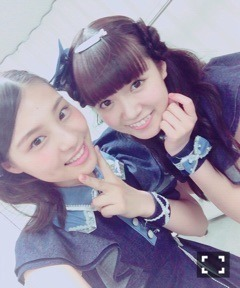
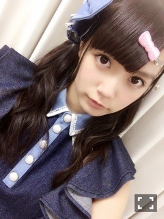

| 2015/12 08 Tue | ひめたん-0o0-その595 |
みなさんどうも～
ひ、中元でーす( ´ ▽ ` )ﾉ

日曜の夜はらじらー！サンデー
前回の放送は声優アーツに水瀬いのりさん、
そして乃木坂から深川麻衣ちゃんが
来てくれました！
中元は噛み倒しました(笑)
おかげで終始ひめたんでなく中元として
お送りする形に
なってしまったわけなんだけれども(笑)
から揚げは温度が大事だと
藤森さんが教えて下さったので
また作ってみます！
上手に出来たらスタジオ持っていきます！
まいまいは似顔絵描いてくれたり
マリアフラッシュしてくれたり
対決の時もすごく穏やかな空気が流れてて
まいまいの癒しパワーは偉大ですね( ˇωˇ )
メンバーからもメール届きました
ありがとう！♡
そして、そして重大ニュース！
らじらーサンデー公開収録決定！
12/27、今年最後の放送日に
オリラジさん声優さんSKEさんそして我々
乃木坂ちゃんが渋谷に大集合です！
乃木坂からは中元と
北野日奈子ちゃん、中田花奈ちゃん、
生駒里奈ちゃんが出演！
3人とも3回目ということで
賑やかになりそうな予感......♪
ただいま観覧募集中なので
是非応募してみてくださいね(^o^)
場所は東京渋谷のNHKです～
3週目のサンデーは
武道館ライブの直後ということになりますが
果たして藤森さんは
ライブ......どうなんでしょうかね？
ゲストもお楽しみに。
ソニレコ12月1週目配信されました～
よかった！今月も引き続き
じょ～んおひめとKちゃんとで
収録できましたよ！
今月はお当番に
笑楽こと相楽伊織ちゃんも来てくれてます
観てね(^o^)

12/3発売 日経エンタテインメント！
アイドルSpecial 2016では
メンバー全員のインタビューが載ってます
アンダーセンター、ラジオ、舞台、
広島凱旋ライブ、雑誌の連載、ユニット...と
本当に濃い一年だったなと読みながら思ったよ
あのインタビューのあとにも
ソニレコ始まったり、これから武道館あったり
年末、落ち着いたらきちんと振り返ろう。
12/4はミュージャックでした！
関西にお住いの方は
観ていただけましたか？
生駒、井上、堀、北野、中元の
普段あまりない組み合わせでした～
もうすぐAKB48をご卒業される
高みなさんと共演できて光栄です！
12/7発売のトップエールは
連載「乃木坂46中元日芽香の挑戦！」第3回
今回はアナウンスに挑戦しました～
好きな分野なので
タメになることばかりで
お勉強になりました！
今までの2回もそうだったけれど
その道のプロの方から直々に教えていただく
機会ってそうないので毎回刺激を受けます！
是非見てくださいね(´｡•ω•｡`)
12/8はボンバーイー！
こちらは名古屋テレビですね
60分の拡大版で
乃木坂アンダーメンバー呼んでいただけて
ありがたいですね（ ; ; ）
トークもライブも盛りだくさんの
60分だったと思います～＊
また出演できたらいいな。
ちーちゃん
え、そろそろ中3組でお茶したい＼(^o^)／
今日久々に3人集合したとき
そう思った！
ライブ初日まで
あと10日を切ったらしい......。
やー早い(｀・ω・´)
未だ実感が沸いてないのですが
このふわふわしたまま終わってしまったら
どうしよう。
ライブ始まるまでに
何回更新できるかわからんから
今のうちに言っておこうかな
ひめたんのサイリウムカラーは
ぴんく × ぴんくです♡

懐かしいな～夏のツアー！

 トッティーはどうですか??笑
トッティーはどうですか??笑
トッティー！
7話見てからもうすごく大好きです♡♡
トッティ♡♡
トド松推しが私の周りには多い。
ひめたんはなんのパンがすき～？
今食べたいのはシナモンロール＼(^o^)／
食べたいし焼きたい＼(^o^)／
あとスコーン＼(^o^)／
ひめたんの最近の好きな食べ物はなにー？
何だろうね～、ここ数ヶ月
チーズをめちゃめちゃ摂取してますね
もう毎日。習慣のようになってきましたよ～
終わりのセラフでは
何のキャラクターが好きですか？
ミカくん♡♡
深夜さんも好き♡
オムライスはケチャップ派ですか？
デミグラスソース派？
それともその他？
オムライスが無性に食べたくなる時
あるよね(´,,•ω•,,｀)
みなさん寒くなってきたので
体調にはお気をつけてね。
ろってぃーのカラオケバトル楽しみ♡
(＊´・ω・＊)
コメント(752)
2015/12/08 23:48